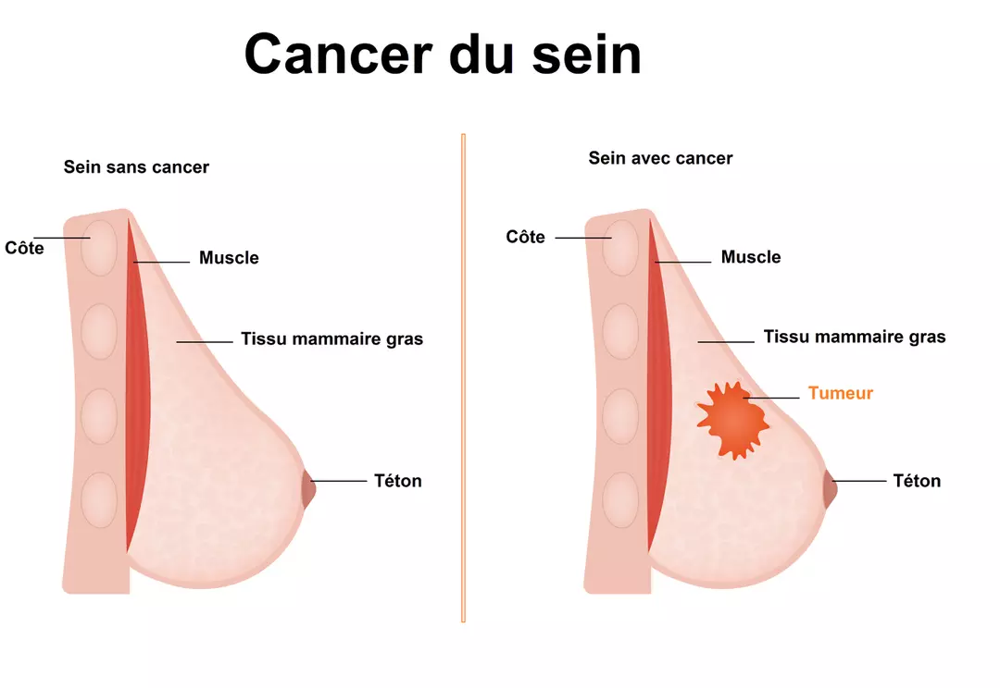
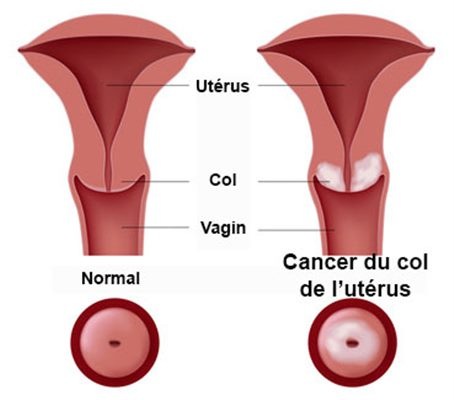
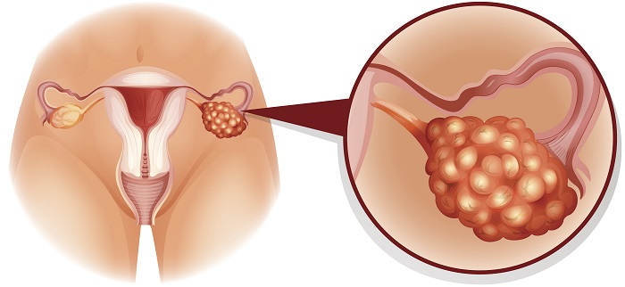
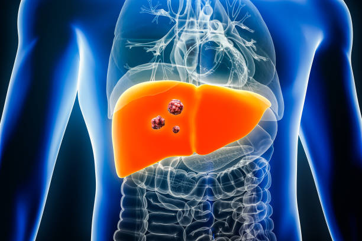
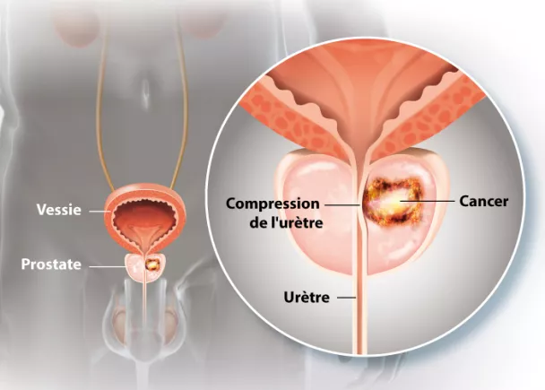
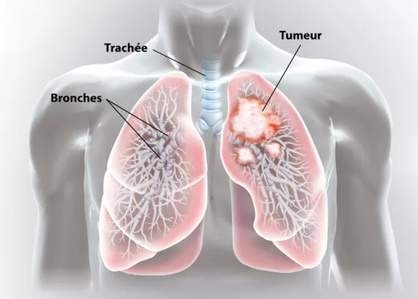
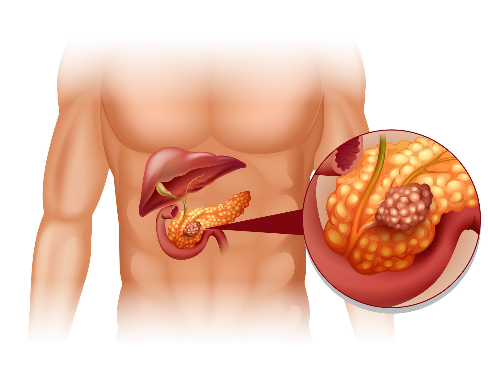
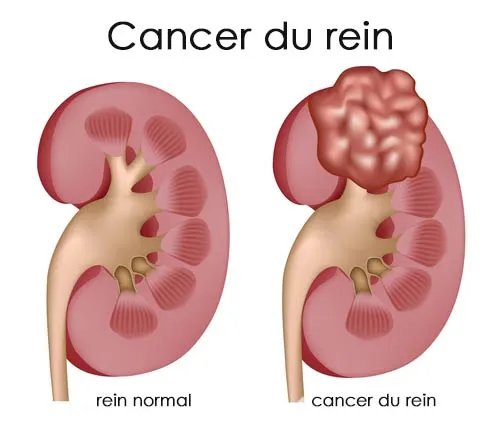

.png)
Cancer du sein
Le cancer du sein est une maladie où les cellules du sein se développent de manière anormale et incontrôlée, formant potentiellement une tumeur maligne. Ce type de cancer peut toucher plusieurs parties du sein, mais se développe souvent dans les canaux ou les lobules. Le cancer du sein est l'un des cancers les plus fréquents chez les femmes dans le monde entier, mais il peut également affecter les hommes, bien que cela soit beaucoup plus rare.

Le cancer du sein résulte de mutations dans les cellules, mais les causes exactes de ces mutations ne sont pas toujours claires. Cependant, plusieurs facteurs de risque sont associés à une probabilité accrue de développer cette maladie :
- Génétique: Les mutations des gènes BRCA1 et BRCA2 augmentent considérablement le risque. Ces mutations peuvent être héritées et sont courantes chez les femmes ayant des antécédents familiaux de cancers du sein ou de l'ovaire.
- Âge: Le risque de cancer du sein augmente avec l'âge, en particulier après 40 ans. Quoique le cancer du sein touche de plus en plus de jeunes femmes.
- Facteurs hormonaux : Une exposition prolongée aux hormones (œstrogènes et progestérone) due à des menstruations précoces ou à une ménopause tardive peut accroître le risque.
Les symptômes du cancer du sein peuvent varier, mais certains signes courants doivent attirer l’attention :
- Masse ou boule dans le sein ou sous l'aisselle : La présence d’une masse dure, souvent indolore, est l’un des premiers signes.
- Changements dans la forme ou la taille du sein : Un sein peut sembler différent de l’autre, avec une asymétrie nouvelle.
- Modifications cutanées : Rougeurs, épaississements, ou aspect de "peau d’orange" sur le sein.
- Modifications du mamelon : Inversion, écoulement (surtout s'il est sanguin), ou douleur inhabituelle du mamelon.
La prévention du cancer du sein implique des stratégies de réduction des risques ainsi que des méthodes de détection précoce :
- Dépistage régulier : Les mammographies sont essentielles pour détecter les cancers à un stade précoce, surtout pour les femmes de plus de 40 ans ou présentant des facteurs de risque.
- Adoption d'un mode de vie sain : Maintenir un poids santé, pratiquer une activité physique régulière, limiter l'alcool, et éviter le tabagisme contribuent à réduire le risque.
- Contraception et traitements hormonaux prudents : Les traitements hormonaux prolongés sont à évaluer avec un professionnel de santé pour limiter les risques.
- Considérations génétiques : Pour les personnes ayant des antécédents familiaux, des tests génétiques et des consultations peuvent être proposés pour une prévention proactive.
- Chemotherapy.
Cancer du col de l'utérus
Le cancer du col de l'utérus est le deuxième cancer le plus fréquent chez les femmes au Burkina Faso(source: IARC/OMS), après le cancer du sein. C'est une une tumeur maligne qui se développe dans les cellules du col de l'utérus. Le col de l’utérus est la partie de l’utérus palpable (toucher vaginal) et visible (examen au spéculum) au fond du vagin. Le cancer prend naissance dans la première couche de la muqueuse qui porte le nom d’épithélium.

La grande majorité des cancers du col de l’utérus surviennent après évolution de « condylomes » (lésion bénignes). Les facteurs de risque du cancer du col de l'utérus sont au nombre de trois :
- les infections à HPV (Human Papillomavirus)
- le tabagisme
- l’infection à VIH (virus du SIDA)
Les infections à HPV sont sexuellement transmissibles ; l’homme est généralement porteur sain (absence de lésion visible) du virus, qu’il transmet à sa partenaire au cours de relations sexuelles non protégées. La plupart du temps, l’infection est transitoire car l’organisme élimine spontanément le virus. Mais dans près de 10 % des cas, le papillomavirus persiste. S’il s’agit d’un HPV dit « à haut risque », il peut évoluer en cancer. Le virus gagne les cellules du col de l’utérus où il se multiplie, créant une inflammation qui, sur de nombreuses années, peut évoluer lentement vers le cancer, d’abord in situ puis invasif. Il existe différents types de virus HPV. Treize d’entre eux sont cancérigènes. Parmi eux, figurent l’HPV16 et l’HPV18 qui sont impliqués dans 70 % des cancers du col de l’utérus.
Un cancer du col de l’utérus peut être suspecté lorsqu’une anomalie est décelée lors d’un examen de dépistage sur prélèvement cervico-utérin. À un stade plus avancé, il peut également être suspecté devant plusieurs signes non spécifiques :
- Saignements après les rapports sexuels et/ou dehors des périodes de règles
- Douleurs pendant les rapports sexuels
- Pertes nouvelles, abondantes, blanches ou plus colorées, parfois malodorantes
- douleurs dans la zone pelvienne, gêne pour uriner, tension douloureuse avec une envie pressante et continuelle d’aller à la selle
- Douleurs lombaires
Ces symptômes ne sont pas spécifiques d’un cancer du col de l’utérus et peuvent avoir d’autres causes. Il est important de les signaler à votre médecin afin qu’il en détermine l’origine.
Quel que soit le contexte de découverte, un certain nombre d’examens doivent être réalisés pour confirmer le diagnostic de cancer de col de l’utérus et en évaluer le stade, c’est-à-dire son degré d’extension. L’ensemble de ces examens constitue le bilan diagnostique.
Lors de ce bilan diagnostique, c’est l’examen anatomopathologique des tissus prélevés lors d’une biopsie ou retirés lors d’une conisation qui permet d’apporter la preuve du cancer. Des examens d’imagerie et des examens sanguins sont ensuite réalisés pour permettre aux médecins de définir si le stade de la tumeur est "précoce" ou "avancé".
Le traitement est adapté au cas personnel et aux caractéristiques du cancer. Il est discuté par des médecins de différentes spécialités lors d’une réunion de concertation pluridisciplinaire (RCP). Le médecin explique les caractéristiques de la maladie. Il présente la proposition de traitements retenue, les bénéfices attendus et les effets indésirables possibles. La chirurgie, la radiothérapie externe, la radiochimiothérapie concomitante, et les traitements médicamenteux (chimiothérapie conventionnelle et/ou thérapies ciblées) sont les principaux traitements des cancers invasifs du col de l’utérus
Il existe un vaccin contre le cancer de l'utérus. D'autres facteurs de prévention participent également à réduire le taux de prévalence du cancer du col de l'utérus
- Vaccination contre le Papillomavirus Humain (HPV): recommandée aux jeunes filles et jeunes garçons avant le début de leur activité sexuelle, idéalement avant 13 ans
- Dépistage régulier par frottis
- Pratiques sexuelles sécurisées: utilisation de préservatifs, limitation du nombre de partenaires sexuels
- Arrêt du tabac
- Alimentation équilibrée (renforce le système immunitaire)
Cancer de l'ovaire
Le cancer de l'ovaire est une maladie où des cellules anormales se développent dans un ou les deux ovaires. Ces cellules peuvent envahir les tissus voisins et se propager à d'autres parties du corps. Les ovaires produisent les ovules et les hormones sexuelles féminines. Lorsque des cellules de l'ovaire subissent des mutations génétiques, elles peuvent se multiplier de manière incontrôlée, formant ainsi une tumeur.
Il existe plusieurs types de cancer de l'ovaire, chacun avec ses caractéristiques propres. Le type le plus fréquent est le carcinome épithélial de l'ovaire

Au fur et à mesure que les cellules cancéreuses se multiplient, la tumeur grossit et peut rompre la capsule qui entoure l’ovaire. Des cellules cancéreuses peuvent alors s’échapper dans le bassin et envahir les organes voisins, notamment les trompes de Fallope, l’utérus, la vessie, le rectum, l’autre ovaire. On parle d’extension pelvienne ou locorégionale.
Les cellules cancéreuses peuvent ensuite s’étendre au-delà du bassin et atteindre le péritoine ou les ganglions lymphatiques situés dans l’abdomen.
Enfin, si aucun traitement n’est entrepris, le cancer risque de se propager à des organes éloignés comme le foie ou les poumons, en empruntant les vaisseaux sanguins et lymphatiques. On parle alors de métastases.
Les facteurs de risque du cancer de l'ovaire peuvent être les suivant:
- Facteurs génétiques
- Mutations des gènes BRCA1 et BRCA2 : responsables de 15 à 20 % des cancers de l'ovaire de haut grade. Les gènes BRCA1 et BRCA2 sont impliqués dans la réparation de l’ADN. Une mutation héréditaire dans l’un de ces gènes perturbe cette fonction, augmentant fortement le risque de cancer du sein et de l’ovaire. Cependant, toutes les femmes porteuses de ces mutations ne développent pas systématiquement un cancer.
- Syndrome de Lynch : plus rare
- Historique familial de cancers du sein et/ou de l'ovaire, même sans mutation génétique identifiée.
- Facteurs hormonaux et reproductifs :
- Absence de grossesse
- Précocité des règles
- Ménopause tardive
- Autres facteurs :
- Surpoids ou obésité
- Âge avancé
Le cancer de l’ovaire provoque peu de symptômes, ce qui rend son diagnostic souvent tardif, une fois que les cellules cancéreuses ont atteint le péritoine. Cependant, certains signes peuvent alerter :
- découverte d’une masse ovarienne lors d’un examen gynécologique ou d’imagerie ;
- douleurs abdominales ou pelviennes ;
- augmentation du volume de l’abdomen due à une accumulation de liquide (ascite) ;
- saignements ou pertes vaginales inhabituels (rarement) ;
- troubles digestifs (troubles du transit, faux besoins d’aller à la selle) ;
- envies fréquentes ou urgentes d’uriner ;
- gonflement d’un membre inférieur, parfois accompagné de douleurs ou de phlébite (caillot dans une veine) ;
- douleurs thoraciques ou essoufflement prolongé ;
- détérioration générale de l’état de santé (perte de poids, fatigue, baisse d’appétit).
Pour diagnostiquer un cancer de l’ovaire, plusieurs examens sont nécessaires afin de confirmer la présence de la maladie et d’évaluer son stade, c’est-à-dire son niveau d’extension. Ce processus constitue le bilan diagnostique.
Le traitement est déterminé en fonction de l’étendue du cancer et repose sur une concertation entre plusieurs spécialistes. Les principales approches incluent :
- Chirurgie, visant à retirer la tumeur
- Traitements médicamenteux, tels que la chimiothérapie conventionnelle et/ou des thérapies ciblées.
La prévention du cancer de l'ovaire repose principalement sur la réduction des facteurs de risque et une surveillance adaptée pour les femmes présentant un risque accru. Voici quelques mesures et recommandations :
- Adopter un mode de vie sain
- Maintenir un poids corporel normal grâce à une alimentation équilibrée et une activité physique régulière
- Limiter la consommation d'alcool et éviter le tabac
- Connaître ses antécédents familiaux
- Les femmes ayant des antécédents familiaux de cancer de l’ovaire ou du sein devraient consulter un professionnel de santé pour évaluer leur risque
- Dans certains cas, un test génétique pour identifier des mutations héréditaires comme celles des gènes BRCA1 et BRCA2 peut être proposé
- Surveillance gynécologique régulière
- Un suivi médical régulier avec un professionnel de santé, incluant des examens pelviens, peut aider à détecter des anomalies
- Être attentive aux symptômes inhabituels (douleurs pelviennes, ballonnements, troubles urinaires ou digestifs)
Cancer du foie
Le foie est un organe vital qui possède de nombreuses fonctions. Il fabrique la bile, filtre le sang, stocke le glucose et produit des substances indispensables au maintien de l’équilibre dans l’organisme.
Le cancer du foie, principalement représenté par le carcinome hépatocellulaire (ou hépatocarcinome), se développe à partir des cellules du foie appelées hépatocytes.
Ce cancer est souvent lié à des maladies chroniques du foie, comme la cirrhose ou les hépatites B et C, bien qu'il puisse rarement survenir sur un foie sain.

Le cancer du foie, dans la majorité des cas (9 sur 10), résulte d’une complication d’une maladie chronique du foie, principalement la cirrhose. Celle-ci est causée par des agressions répétées comme l’alcool, les hépatites B ou C, ou un excès de graisse ou de fer, entraînant une fibrose et un dysfonctionnement progressif du foie. Les cellules fragilisées par la cirrhose peuvent évoluer en cellules cancéreuses. Le cancer se manifeste par une multiplication anarchique des cellules formant des tumeurs, qui peuvent envahir les vaisseaux sanguins ou biliaires et produire des métastases dans d’autres parties du corps.
les élements qui peuvent favoriser e developement du cancer du foi sont:
- Alcool : Une consommation prolongée peut entraîner une cirrhose, augmentant fortement le risque de cancer.
- Tabac : Le tabac est un facteur reconnu pour plusieurs cancers, y compris celui du foie.
- Hépatites B et C : Ces infections chroniques provoquent une inflammation du foie, évoluant parfois en cirrhose et en cancer.
- Surpoids et obésité : Associés à des désordres métaboliques, ils augmentent le risque de stéatose hépatique (excès de graisses dans le foie), qui peut favoriser le cancer.
- Hémochromatose : Cette maladie génétique entraîne une surcharge en fer dans le foie, causant une inflammation et un risque accru de cirrhose et de cancer.
- Stéatose hépatique : Liée à des troubles métaboliques comme le diabète ou l’obésité, elle peut conduire à des complications hépatiques graves.
Le cancer du foie est souvent découvert lors du suivi de maladies chroniques du foie comme la cirrhose ou les hépatites virales. Chez une personne sans antécédents connus, les symptômes apparaissent tardivement et sont peu spécifiques (fatigue, troubles digestifs, jaunisse, ascite). Des examens tels que l’échographie, le scanner, l’IRM, et les analyses sanguines permettent de poser le diagnostic et d’évaluer l’état du foie pour adapter le traitement.
Les principaux traitements comprennent :
- Chirurgie : ablation partielle du foie si celui-ci fonctionne normalement.
- Greffe de foie : adaptée en cas de cirrhose avancée.
- Destruction tumorale percutanée : alternative à la chirurgie pour les petites tumeurs.
- Chimiothérapie ciblée : pour réduire la taille de la tumeur et ralentir la maladie.
Les soins de support, tels que la prise en charge de la douleur, le soutien psychologique, et les conseils diététiques, complètent le traitement principal.
Il existe des mesures à adopter pour réduire le risque de cancer du foie, bien que leur efficacité varie selon chaque situation individuelle.
- Réduction de la consommation d'alcool
- Vaccination contre l'hépatite B : Se faire vacciner pour prévenir l'infection chronique par le virus de l'hépatite B.
- Prévention des hépatites virales : Adopter des pratiques sûres, telles que l'utilisation de préservatifs et l'évitement du partage d'aiguilles, pour prévenir les hépatites B et C.
- Arrêt du tabac : Éliminer le tabac, un facteur de risque connu pour plusieurs cancers, y compris celui du foie.
- Maintien d'un poids santé : Adopter une alimentation équilibrée et pratiquer une activité physique régulière pour prévenir l'obésité et les désordres métaboliques associés à la stéatose hépatique.
- Dépistage et prise en charge de l’hémochromatose : En cas d’antécédents familiaux ou de suspicion de surcharge en fer, consulter un professionnel de santé pour un dépistage précoce.
- Surveillance des personnes à risque : Les personnes atteintes d’une maladie chronique du foie (hépatite, cirrhose) doivent effectuer régulièrement des échographies et des analyses sanguines pour détecter précocement d'éventuelles complications.
Cancer de la vessie
Le cancer de la vessie est une maladie où des cellules anormales se développent dans la paroi interne de la vessie, formant une tumeur. Ces cellules se multiplient de manière incontrôlée, ce qui peut affecter le fonctionnement de la vessie, un organe important pour stocker et évacuer l'urine.
Les principaux facteurs de risque de cancer de la vessie incluent
- Le tabac : Principal facteur de risque, le tabac expose la vessie à des substances toxiques présentes dans l'urine.
- Exposition professionnelle : Certaines substances chimiques, comme les amines aromatiques et les hydrocarbures aromatiques polycycliques, sont cancérogènes pour la vessie.
- Infections : Des infections chroniques de la vessie peuvent augmenter le risque.
- Certains traitements : Quelques médicaments ou thérapies peuvent favoriser l'apparition de ce cancer.
- Produits dans l’eau potable : La présence de substances toxiques dans l’eau est également un facteur possible.
- Sang dans les urines : Principal signe suspect, visible à l'œil nu.
- Troubles urinaires :
- Envies fréquentes ou urgentes d'uriner.
- Difficulté ou incapacité à uriner.
- Diminution de la capacité de la vessie.
- Brûlures urinaires persistantes.
- Spasmes de la vessie.
- Douleurs :
- Douleur dans le bas du dos.
- Douleurs dans les os (en cas de propagation de la maladie).
- Autres signes avancés :
- Perte de poids.
- Fatigue persistante.
Le diagnostic du cancer de la vessie repose principalement sur:
- La détection de sang dans les urines (hématurie) ou d'autres symptômes urinaires persistants.
- Un bilan initial comprenant :
- Une échographie de l'appareil urinaire.
- Une cytologie urinaire pour rechercher des cellules cancéreuses.
- Une cystoscopie (inspection de la vessie avec prélèvements si nécessaire).
- Une résection transurétrale de vessie (RTUV) pour confirmer le diagnostic et traiter les tumeurs superficielles.
Le choix des traitements dépend du stade (profondeur d'infiltration) et du grade (agressivité) de la tumeur. Les options incluent :
- Chirurgie :
- RTUV pour les tumeurs superficielles.
- Ablation de la vessie pour les tumeurs infiltrantes.
- Chimiothérapie ou immunothérapie : Utilisées pour traiter ou prévenir la récidive des tumeurs.
- Radiothérapie : Pour contrôler ou réduire la tumeur.
Objectifs des traitements :
- Supprimer la tumeur ou les métastases.
- Réduire les risques de récidive.
- Ralentir l’évolution de la maladie.
- Traiter les symptômes liés au cancer.
La prévention du cancer de la vessie repose principalement sur la réduction des facteurs de risque connus. Arrêter de fumer est l'une des mesures les plus efficaces, car le tabac est le principal facteur de risque pour ce cancer. De plus, les personnes exposées à des substances chimiques dans leur environnement de travail, comme les amines aromatiques, doivent suivre des protocoles de sécurité stricts pour limiter leur exposition. Il est également conseillé de boire de l'eau potable pure pour éviter l'ingestion de substances toxiques présentes dans certains réseaux d'eau. Une surveillance médicale régulière est recommandée pour les personnes ayant des antécédents familiaux ou des conditions favorisant l'apparition de ce type de cancer. Enfin, traiter rapidement les infections urinaires chroniques et éviter l'exposition prolongée à des produits chimiques peut contribuer à réduire les risques.
Cancer de la prostate
La prostate est une glande du système reproducteur masculin dont la fonction principale est de produire le liquide prostatique, composant essentiel du sperme qui favorise la survie, la maturation et la mobilité des spermatozoïdes.
Le cancer de la prostate, principalement représenté par l’adénocarcinome prostatique, est le cancer l'un des cancers les plus fréquents chez l’homme, en Afrique de l'Ouest et dans le monde en général. Cette pathologie touche principalement les hommes d’âge moyen à avancé.

Le cancer de la prostate commence souvent lentement à partir de cellules qui deviennent anormales sous l'influence des hormones et de la génétique. Dans la plupart des cas, il reste confiné à la prostate pendant de nombreuses années avant de s'étendre aux tissus environnants ou de se propager, notamment aux os.
les élements qui peuvent favoriser le developement du cancer de la prostate sont:
- Âge: Le risque augmente significativement après 45 ans et devient particulièrement marqué à partir de 70 ans.
- Antécédents familiaux : La présence de cancers de la prostate (ou de cancers associés, tels que ceux du sein ou de l’ovaire) dans la famille augmente le risque, avec une implication possible de gènes tels que BRCA1, BRCA2 et HOXB13.
- Facteurs hormonaux : L’influence de la testostérone et d’autres hormones peut jouer un rôle dans la transformation cellulaire.
- Régime alimentaire : Une alimentation riche en graisses saturées et pauvre en fruits et légumes est associée à un risque accru.
- Exposition environnementale :Certains produits chimiques ou perturbateurs endocriniens peuvent contribuer au développement de la maladie.
Le cancer de la prostate peut être découvert tôt grâce au dépistage. Pour cela, on mesure le PSA (une protéine produite par la prostate) et on effectue un toucher rectal. Même si un homme ne ressent aucun symptôme, un taux élevé de PSA ou une anomalie détectée lors du toucher peut entraîner d'autres examens, comme l'IRM, la biopsie, le scanner, la scintigraphie osseuse ou le PET Scan. Ces examens confirment le diagnostic et montrent si le cancer s'est étendu.
Les principaux traitements sont :
- Surveillance active : un suivi régulier (touchers, test PSA, imagerie) pour les cancers à faible risque et à évolution lente.
- Chirurgie : la prostate est enlevée (prostatectomie radicale), souvent par voie mini-invasive assistée par robot, parfois avec le retrait des ganglions lymphatiques voisins.
- Radiothérapie : des rayons sont utilisés pour détruire les cellules cancéreuses, surtout quand le cancer est localisé.
- Thérapie hormonale : des médicaments qui réduisent l'influence des hormones sur la croissance du cancer, surtout dans les cas avancés.
- Chimiothérapie : utilisée lorsque le cancer s'est propagé ou ne répond pas aux autres traitements.
En plus de ces traitements, des soins de support (pour la douleur, l'accompagnement psychologique et la gestion des effets secondaires) complètent le traitement principal.
Il n'existe pas de méthodes particulières pour prévénir le cancer de la prostate. Cependant, quelques habitudes de vie peuvent aider à éviter certains facteurs de risque.
- Adopter une alimentation équilibrée : Privilégier une diète riche en fruits, légumes et fibres, et limiter la consommation de graisses saturées.
- Maintenir un poids santé : Pratiquer une activité physique régulière pour éviter l'obésité, facteur de risque indirect.
- Réduire la consommation de tabac et d'alcool : Limiter ces substances peut contribuer à diminuer le risque de développer divers cancers.
- Suivi médical régulier : Consulter régulièrement votre médecin pour un suivi adapté, surtout si vous présentez des facteurs de risque spécifiques (antécédents familiaux,...).
Cancer du poumon
Le cancer du poumon est une tumeur maligne, ce qui signifie que les cellules du poumon se multiplient de manière incontrôlée. Ces cellules anormales peuvent envahir les tissus sains et se répandre dans le corps par le sang et les ganglions lymphatiques. Elles peuvent ainsi former des tumeurs dans les ganglions, les os, le cerveau, les glandes surrénales et le foie.

Symptômes du cancer du poumon :
- Une toux persistante pendant plusieurs semaines, même malgré un traitement.
- Une toux qui change soudainement de caractère.
- Des difficultés respiratoires, au repos ou lors d'une activité légère.
- Des douleurs dans la cage thoracique.
- Des crachats, parfois accompagnés de sang.
Ces symptômes peuvent également être causés par d'autres affections ; consultez votre médecin pour un diagnostic précis.
Causes du cancer du poumon : Le tabagisme est le principal facteur de risque, bien que d'autres expositions environnementales puissent également contribuer au développement de la maladie.
Diagnostic :
- L'examen clinique par le médecin.
- La bronchoscopie.
- La radiographie ou le scanner des poumons.
Traitement :
- Chirurgie : Enlèvement de la tumeur.
- Radiothérapie : Destruction locale des cellules cancéreuses.
- Médicaments : Chimiothérapie, immunothérapie et thérapies ciblées pour combattre les cellules cancéreuses dans tout le corps.
- Arrêter le tabac : Le tabac est le principal facteur de risque. Cesser de fumer et éviter la fumée secondaire sont des étapes cruciales.
- Éviter les expositions nocives : Limitez l'exposition aux substances cancérogènes, notamment sur le lieu de travail (comme l'amiante) et dans votre environnement (pollution de l'air).
- Adopter un mode de vie sain : Une alimentation équilibrée, riche en fruits et légumes, et une activité physique régulière contribuent à renforcer le système immunitaire.
- Faire des contrôles médicaux réguliers : Si vous avez des antécédents familiaux ou si vous avez été exposé à des facteurs de risque, consultez régulièrement votre médecin pour un suivi.
Ces mesures ne garantissent pas une prévention totale, mais elles permettent de réduire considérablement le risque de développer un cancer du poumon.
Cancer du pancréas
Le pancréas est un organe de 15 à 20 centimètres de long situé dans la partie supérieure de l’abdomen. Le cancer du pancréas est une tumeur maligne qui se développe dans le pancréas, une glande jouant un rôle clé dans la digestion et la régulation du sucre dans le sang.
Le pancréas comporte plusieurs types de cellules, ce qui explique que différentes sortes de tumeurs puissent s’y développer. Ces tumeurs peuvent être bénignes ou malignes. Le cancer du pancréas désigne une tumeur maligne formée à partir de cellules pancréatiques. Souvent diagnostiqué à un stade avancé en raison de l'absence de symptômes précoces, ce cancer présente un pronostic réservé.

Le cancer du pancréas est souvent asymptomatique aux débuts et se manifeste lorsque la maladie est avancée. Les symptômes les plus fréquents incluent :
- Un amaigrissement progressif ou rapide et marqué
- Une fatigue inexpliquée et une sensation de faiblesse générale
- Une perte d’appétit
- Des douleurs abdominales, notamment épigastriques, pouvant irradier sous les côtes ou vers le dos
- Dans certains cas, une jaunisse (ictère) due à la compression du cholédoque, accompagnée d’urines foncées, de selles décolorées et parfois de démangeaisons
- Des troubles digestifs comme nausées, vomissements, selles grasses (stéatorrhée) ou diarrhée chronique
- De plus, l’apparition ou l’aggravation d’un diabète, ainsi que des phénomènes tels que la phlébite ou une pancréatite aigüe, peuvent être observés
Le diagnostic débute par un examen clinique complet dans lequel le médecin interroge le patient sur ses symptômes, ses antécédents et procède à une palpation pouvant parfois déceler une masse ou des signes d’extension (hépatomégalie, adénopathies, ascite).
Le bilan initial repose ensuite sur des examens d’imagerie — principalement le scanner (tomodensitométrie), l’IRM et l’écho-endoscopie — complétés par des analyses sanguines (dosage du marqueur tumoral CA 19-9) et une biopsie pour confirmer le diagnostic et établir le profil de la tumeur.
De nombreux facteurs de risque ont été identifiés pour le cancer du pancréas, bien que certains restent moins clairs. Le tabagisme est le principal facteur établi : plus la consommation de tabac est élevée et prolongée, plus le risque augmente, contribuant à 20–30 % des cas. Le diabète (de type 1 ou 2) constitue également un facteur de risque, avec notamment un diabète de type 2 qui doublerait le risque. Le surpoids et l’obésité, en particulier lorsque la graisse abdominale est excessive, accroissent de manière linéaire le risque de développer ce cancer.
D’autres facteurs incluent :
- L’alimentation : Une consommation excessive de produits transformés riches en sucres et lipides (typique du régime occidental) pourrait augmenter le risque, tandis qu’un régime de type méditerranéen, riche en végétaux, serait potentiellement protecteur.
- La pancréatite chronique : Une inflammation prolongée du pancréas, souvent liée à une consommation excessive d’alcool, est un facteur de risque établi, bien que moins fréquent.
- Les prédispositions génétiques et familiales : Dans 4 à 10 % des cas, plusieurs membres d’une même famille sont atteints. Des mutations héréditaires (par exemple, dans les gènes BRCA1/2, ATM, PALB2, STK11, ou PRSS1) peuvent augmenter significativement le risque, surtout lorsque combinées à d’autres facteurs comme le tabagisme.
Pour prévenir le cancer du pancréas, il est essentiel de :
- Éviter le tabagisme : Arrêter de fumer et éviter toute exposition au tabac.
- Maintenir un poids santé : Adopter une alimentation équilibrée, de préférence de type méditerranéen, et pratiquer une activité physique régulière.
- Gérer le diabète efficacement : Surveiller régulièrement la glycémie et suivre les recommandations médicales.
- Assurer un suivi médical régulier : Notamment en cas d’antécédents familiaux ou de facteurs de risque spécifiques, afin de détecter précocement toute anomalie.
Cancer du rein
Les deux reins sont situés de part et d’autre de la colonne vertébrale, dans l’abdomen. Ils filtrent le sang et évacuent les déchets sous forme d’urine. Le cancer du rein touche presque toujours un seul rein.

Les spécialistes ignorent les causes exactes du cancer du rein. Cependant, plusieurs facteurs peuvent augmenter le risque, notamment :
- Le tabac
- Le surpoids
- L’hypertension
- Un âge avancé
- L’exposition répétée aux rayons X pendant de nombreuses années
- Certaines substances chimiques
- Une altération chronique de la fonction rénale
- Une prédisposition génétique
De plus, le risque familial joue un rôle important, car certaines familles sont particulièrement prédisposées à ce cancer.
Le dépistage permet de découvrir une tumeur très tôt, avant l’apparition des symptômes. Il peut être judicieux pour :
- Les proches parents de personnes touchées par le cancer du rein en raison d’une prédisposition héréditaire.
- Les personnes présentant une polykystose rénale congénitale.
Votre médecin ou une consultation génétique pourra vous renseigner sur les contrôles réguliers à effectuer.
Les symptômes du cancer du rein apparaissent souvent à un stade avancé et peuvent inclure :
- Du sang dans l’urine (hématurie)
- Des douleurs sur le côté de l’abdomen
- Un gonflement perceptible sur le côté de l’abdomen
- Une perte de poids inexpliquée
- De l’abattement
- De la fièvre
- De l’anémie
- Des gonflements des ganglions lymphatiques
- De l’hypertension
- Des jambes gonflées (oedème)
- Un taux de calcium élevé dans le sang
- Une fonction hépatique limitée
- Une varice dans le scrotum (varicocèle)
En présence de symptômes, les médecins posent le diagnostic du cancer du rein à l’aide de divers examens :
- Examens de laboratoire (sang et urine)
- Échographie
- Scanner
- Imagerie par résonance magnétique (IRM)
- Angiographie rénale
- Prélèvements de tissus
- Scintigraphie
Les principaux traitements du cancer du rein incluent :
- Une opération chirurgicale, qui consiste à enlever le rein atteint en entier ou en partie.
- Des procédés mini-invasifs (traitement par le chaud ou par le froid).
- Des traitements médicamenteux.
Cancer chez l'enfant
Le cancer chez l'enfant recouvre divers types de tumeurs; certains apparaissent presque exclusivement à l'enfance.
Parmi ces cancers, les leucémies représentent le type de cancer le plus fréquent chez l'enfant.
Les causes exactes des leucémies chez l'enfant ne sont pas toujours claires. Cependant, plusieurs facteurs peuvent augmenter le risque :
- Prédispositions génétiques et antécédents familiaux de cancers.
- Exposition à certaines radiations ou substances chimiques, bien que cela soit rare chez l'enfant.
- Certains syndromes génétiques et anomalies chromosomiques.
Les signes pouvant évoquer une leucémie chez l'enfant incluent :
- Fièvre inexpliquée et persistante
- Fatigue, pâleur et perte de poids
- Douleurs osseuses ou articulaires
- Ecchymoses fréquentes ou saignements inexpliqués
- Infections récurrentes
- Changements soudains de comportement
Le diagnostic de la leucémie est établi à l'aide d'analyses sanguines approfondies et d'examens de la moelle osseuse. Bien que le dépistage de masse ne soit pas pratiqué, des contrôles réguliers sont recommandés pour les enfants présentant des facteurs de risque ou des antécédents familiaux.
Les traitements des leucémies chez l'enfant varient selon le type et le stade de la maladie. Ils incluent généralement :
- La chimiothérapie
- La radiothérapie, dans certains cas
- La greffe de moelle osseuse pour les formes agressives
- Des traitements ciblés et des thérapies de soutien
Bien qu'il n'existe pas de mesures de prévention spécifiques pour la leucémie chez l'enfant, adopter un mode de vie sain peut contribuer à diminuer le risque :
- Suivi médical régulier, notamment pour les enfants à risque ou ayant des antécédents familiaux.
- Protection contre les expositions aux radiations et aux substances toxiques.
- Promotion d'une alimentation équilibrée et d'une activité physique adaptée.
Cancers de la peau
Parmi les cancers de peau les plus fréquents en Afrique, on retrouve surtout :
- Carcinome basocellulaire et épidermoïde : Ces cancers apparaissent souvent sur des zones abîmées ou cicatrisées.
- Mélanome : Le plus dangereux, souvent repéré tardivement, qui se situe sur les paumes, les plantes des pieds ou sous les ongles.
- Sarcome de Kaposi : Survient surtout chez les personnes au système immunitaire affaibli (ex. en cas de VIH).
Les principaux facteurs qui augmentent le risque de cancer de la peau sont :
- Une exposition prolongée au soleil.
- L’albinisme, qui diminue la protection naturelle contre les UV.
- Un système immunitaire affaibli.
- Des cicatrices ou des lésions cutanées répétées.
Pour détecter les cancers de la peau tôt :
- Faites régulièrement un auto-examen de votre peau.
- Consultez un dermatologue si vous remarquez un changement suspect.
- Participez aux campagnes de sensibilisation.
Les traitements possibles sont :
- La chirurgie pour enlever la tumeur.
- La radiothérapie et la chimiothérapie pour les cancers plus avancés.
- L’immunothérapie dans certains cas spécifiques.
Pour prévenir les cancers de la peau :
- Protégez-vous du soleil en portant des vêtements couvrants, un chapeau et en utilisant de la crème solaire.
- Effectuez régulièrement un auto-examen de votre peau.
- Informez-vous et participez aux campagnes de sensibilisation.